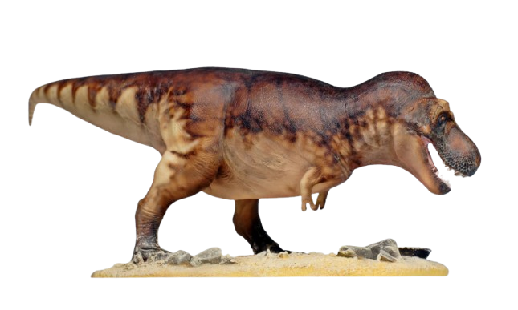

Tyrannosaurus Rex (T-Rex)

The name itself means 'Tyrant Lizard King'. Tyrannosaurus rex, or T. rex, was one of the largest and most fearsome meat-eating dinosaurs. It lived around 66 million years ago, during the Late Cretaceous period. T. rex had a massive, powerful body with strong legs that allowed it to walk and run short distances. It stood about 12 feet tall at the hips and could grow up to 40 feet long. Its head was huge, with a mouth full of sharp, serrated teeth, perfect for tearing through flesh. Despite its small arms, which were unusually short for its size, T. rex had a strong neck and jaw muscles that helped it bite down with incredible force , it's bite was bone crushing. Its keen senses, especially its vision and sense of smell, made it a skilled predator. It had the strongest bite force of any land animal (present or extinct). T. rex remains one of the most well-known dinosaurs, no doubt portrayed as the "king" of the dinosaurs because of its size, strength, and power.
NOTE : THE BITE FORCES ALONG WITH SOME DINOSAUR SIZES / WEIGHTS ARE ONLY PREDICTIONS / ESTIMATES DUE TO INCOMPLETE FOSSILS PRESENT , BUT STILL WE HAVE TRIED TO INCLUDE THOSE NUMBERS WHICH ARE CURRENTLY ACCEPTED AS REASONABLE AND SOMEWHAT ACCURATE
SIZE : 40-43 ft long (12.1m-13.1m) , 12 ft height at the hips (3.6m)
WEIGHT : About 8 - 10 tons (8000 kg - 10,000 kg)
BITE FORCE : 48,000 N (10,000 PSI)
The name itself means 'Spined Lizard'. Spinosaurus is my favorite dinosaur, although it’s probably not the powerhouse many imagine. Living around 100 million years ago in the Cretaceous period, it was one of the largest carnivorous dinosaurs (in terms of size) ever discovered. With a long, slender body and a distinctive sail on its back—formed by tall spines along its vertebrae—Spinosaurus had a look unlike any other dinosaur. Its long, crocodile-like snout, filled with cone-shaped teeth, was perfect for catching fish, which made up much of its diet. It's teeth were not serrated and were used for gripping slippery fish rather than tear prey apart like other carnivorous dinos. It was also armed with long arms and claws which helped it catch fish. Unlike other large predators, it had features suited to a semi-aquatic life, likely spending a lot of time near rivers and swamps , but it also preyed upon small dinsoaurs on land occasionally , especially when fishes were not available. Though it was well adapted to water, Spinosaurus was probably not a deep swimmer; it likely stuck to shallower waters. While not the land powerhouse some expect and not as strong as other big carnivorous dinosaurs, Spinosaurus’s mix of water and land adaptations makes it a fascinating and truly unique creature.
SIZE : 46 ft long (14m) , 10-13 ft height (excluding the sail) at the hips (3m-3.9m) and about 16-19 ft (include the sail) (4.8m-5.7m)
WEIGHT : 7.4 tons (7400 kg)
BITE FORCE : 12,000 N (3,000 PSI)
The name itself means 'Three horned face'. The Triceratops, often called "Trike," was one of the most recognizable dinosaurs due to its three horns (the front big ones were about 3 ft (1m) in length) and a large bony frill at the back of its head. Living around 68 to 66 million years ago in the Late Cretaceous period, Triceratops was a massive herbivore. Its three horns—a long one above each eye and a shorter one on its nose wree used for defense against predators like T. rex, as well as for display and possibly even combat with other Triceratops. The large frill helped protect its neck or served as a display feature to attract mates or intimidate rivals. Despite its intimidating appearance, Triceratops was a plant-eater, using its strong beak and powerful jaws to munch through tough vegetation. With its sturdy build and defensive horns, Triceratops remains one of the most iconic dinosaurs and a favorite among fans.
SIZE : 30 ft long (9m) , 3 ft height (0.9m)
WEIGHT : 5.4 - 7.2 tons (5400 kg - 7200 kg)
The name itself means 'Swift Robber'. The Velociraptor, often simply called "raptor," was a small but fierce carnivorous dinosaur that lived around 75 to 71 million years ago during the Late Cretaceous period. Despite its small size, it was a skilled hunter. Velociraptor had a slender, agile body with a long tail that helped it balance and make sharp turns while chasing prey. Its most famous feature was a large, curved (sickle shaped) claw on each foot, which it likely used to slash at prey during attacks. Unlike the scaly creatures often seen in movies, real Velociraptors were covered in feathers, giving them a bird-like appearance. They likely hunted smaller animals and may have used pack strategies, although some evidence suggests they could have been solitary. Known for their intelligence and agility, Velociraptors were fast and cunning predators that relied on speed, surprise, and skill rather than brute strength to catch their prey.
SIZE : 6 ft long (1.8m) , 1.6 ft height (0.5m)
WEIGHT : 0.016 tons (15 kg)
BITE FORCE : 300 N (70 PSI)
The name itself means 'Argentine Lizard'. Argentinosaurus was the largest land animal ever (in terms of size) — and also one of the heaviest land animals to ever exist. This massive herbivore roamed South America around 94 to 97 million years ago, during the Late Cretaceous period. With a long neck, it could reach high into the trees to feed on leaves, while its lengthy tail may have been used for balance or as a defense against predators. Despite its enormous size, Argentinosaurus had a relatively small head and likely had a slow, steady pace rather than quick movements. This giant sauropod’s sheer size made it nearly invincible to most predators, though it still had to protect itself from massive carnivores like Giganotosaurus (to be discussed later). Known for its immense scale and gentle nature as a plant-eater, Argentinosaurus continues to fascinate paleontologists and dinosaur fans alike as one of the largest creatures to ever walk the Earth.
SIZE : 100 ft long (30m) , 69 ft - 82 ft height (with neck elevated) (21m - 25m) , 43 ft - 49 ft (13m - 15 m) (neck not elevated)
WEIGHT : 84 tons (76,000 kg)
The name itself means 'Fused Lizard'. Ankylosaurus was a heavily armored dinosaur that lived around 68 to 66 million years ago, during the Late Cretaceous period. It was a medium-sized herbivore, and its body was covered in thick, bony plates and spikes that acted as natural armor against predators , even T-rex would have a tough time biting through those. It was literally a living tank. One of its most iconic features was the large, bony club at the end of its tail, which it could swing with force to defend itself from attacks, even from powerful predators like T. rex. The club could generate enough power to break the skull of even a predator like T-rex ! Ankylosaurus had a wide, low body with sturdy legs, allowing it to keep close to the ground and move steadily. Its small, leaf-shaped teeth were perfect for munching on low-growing plants, and its large gut likely helped it digest tough vegetation. It is widely Known as one of the best-defended dinosaurs.
SIZE : 20 - 26 ft long (6 - 8m) , 5.6 ft height (at the hips) (1.7m)
WEIGHT : 4.8 tons - 8 tons (4,800 kg - 8,000 kg)
The name itself means 'Shark toothed Lizard'. Carcharodontosaurus was a massive carnivorous dinosaur that lived around 100 million years ago during the mid-Cretaceous period in what is now North Africa.It is often considered a rival of Spinosaurus due to the same continent they lived in , though fights and conflicts may have been rare as both occupied different habitats. It was similar in size as other large predators like T. rex. Named for its sharp, serrated teeth that resembled those of a great white shark, Carcharodontosaurus was well-equipped for a predatory lifestyle. It had a long, powerful skull, filled with blade-like teeth designed for slicing through the flesh of large herbivores. Its body was built for strength and power, with strong legs that allowed it to move relatively quickly for its size. Though it probably wasn’t the largest theropod, Carcharodontosaurus was a formidable predator and one of the top hunters in its ecosystem.
SIZE : 39 - 44 ft long (12 - 13.5m) , 12 ft - 15 ft height (at the hips) (3.7m - 4.5m)
WEIGHT : 6 - 8 tons (6,000 kg - 8,000 kg)
BITE FORCE : 25,500 N (5,000 PSI)
The name itself means 'Giant Southern Lizard'. Giganotosaurus, often called "Giga" for short, was one of the largest meat-eating dinosaurs, probably exceeding T. rex in size. It lived around 98 million years ago during the Late Cretaceous period in what is now South America. Unlike T. rex, which had a stocky build, Giganotosaurus was longer and more streamlined, with a slightly lighter frame (as compared to T-rex), possibly enabling it to move faster over short distances. Its skull was large, filled with sharp, serrated teeth that could easily tear into the flesh of its prey, which may have even included sauropods. I consider it as the 2nd most powerful carnivore dino after T-rex or possibly even the 2nd most powerful land predator.
Giganotosaurus had powerful, muscular legs that allowed it to be agile despite its size, and its long, balanced tail helped it make quick turns while hunting. Its arms, while small, were a bit more developed than T. rex's, though they weren’t a primary tool for hunting. Known for its massive size and hunting prowess, Giganotosaurus was one of the apex predators of its time, making it a fearsome and iconic member of the dinosaur world.
SIZE : 40 - 43 ft long (12 - 13m) , 12 - 13 ft height (at the hips) (3.6m-3.9m)
WEIGHT : 8 - 9 tons (8,000 kg - 9,000 kg)
BITE FORCE : 30,000 N (6,000 PSI)